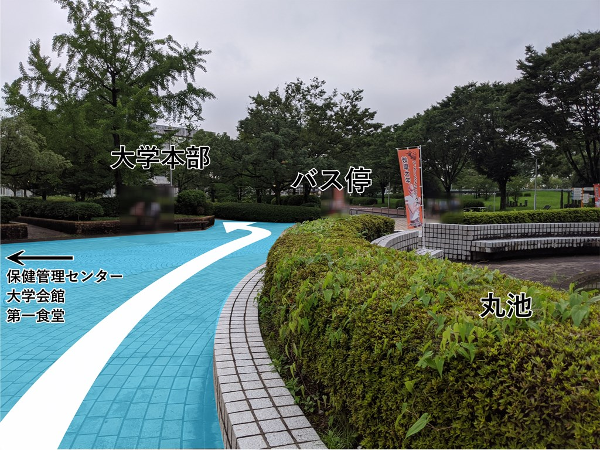
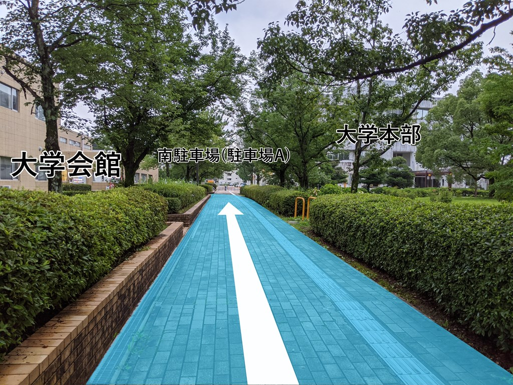
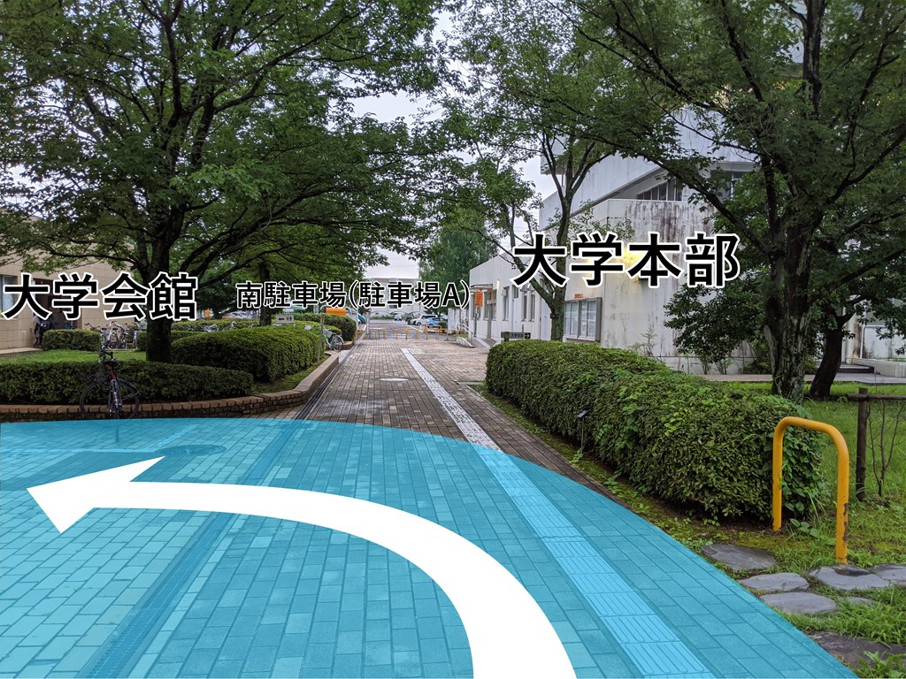

岐大祭BOXへの行き方
写真の水色の部分を通って矢印の向きに進んでください。
丸池からスタート！バス停の方を向いて歩き始めます。バス停へ続く広い道の一本左の道へ進みます。

大学会館を左手に見ながら大学本部の建物の方へ向かいます。

大学本部の建物の手前で左に曲がります。

大学会館の方へ向かいます。奥に見えるのが目的地、岐大祭Boxです！
一番奥まで行くとドアがあります。ここが岐大祭Boxです。ポストもありますので不在の際にご利用ください。